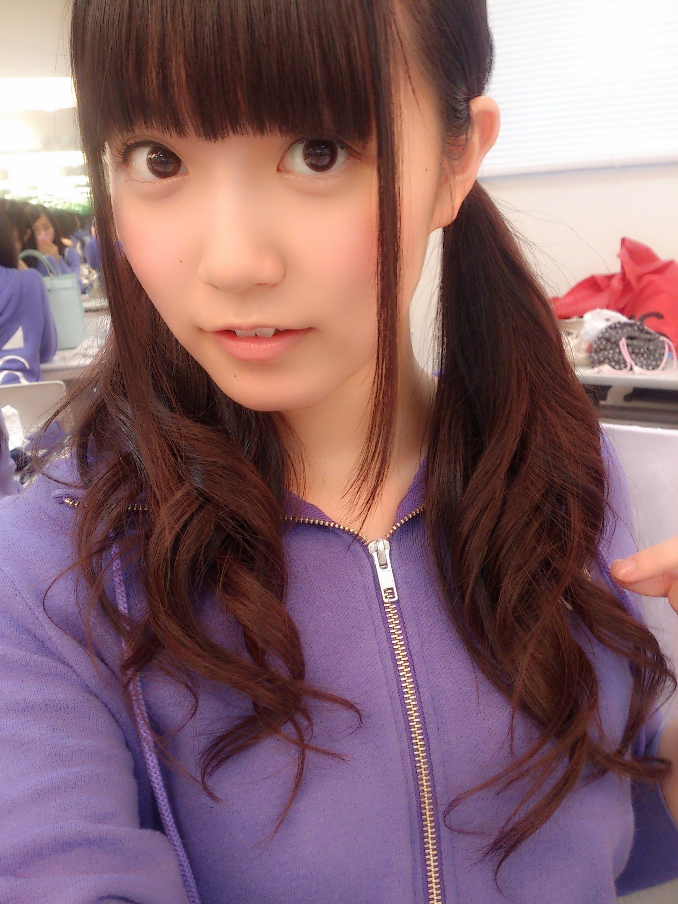
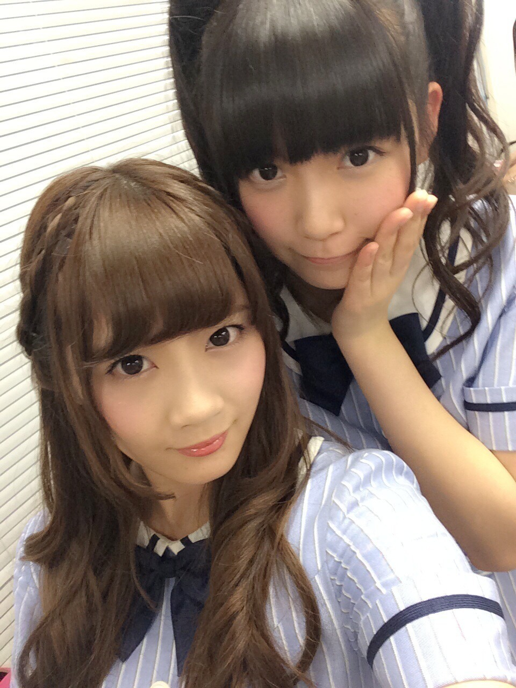
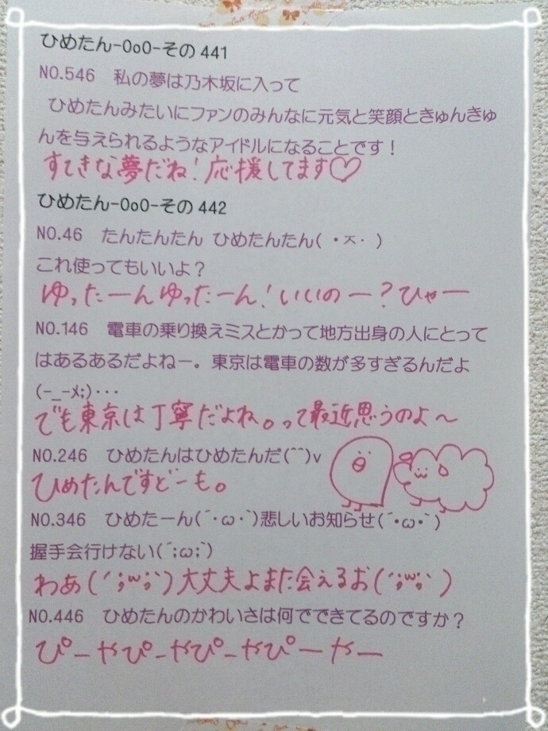

| 2014/09 03 Wed | ひめたん-OoO-その475 |
＼ あー♡ ／

どんくさいコンビのゆったん
ゆったんの脚よくなりますように。
のぎ天観たよ！
お化け屋敷やってたのね
ひめたんゆーほどビビってなかったね(笑)
泣きそうになってた寧々ちゃん
かわいかったよー
ひめたんびーむは華麗にスルーされてたよー
キャンプは前後編なんだと思ってたら
3週だったんだねー
来週こそ寝顔編ですよーひめたんローリングしてたよー
来週もお楽しみに☆
乃木のの！
#74は
伊藤万理華ちゃん
井上小百合ちゃん
ラジオ福島・山梨放送で9/6
青森放送で9/7
#75は
秋元真夏ちゃん
衛藤美彩ちゃん
文化放送で9/7
ラジオ福島・山梨放送で9/13
青森放送で9/14
です☆
文化放送ではちょっとお久しぶりですね～

10th個別握手会 追加開催決定！
1/31(土)東京ビッグサイトです
ひめたんは1～4部に参加しますよー
詳しくは公式サイトをチェックしてみてね
お待ちしてます(^O^)～＊
もいっこだけ告知させてねー
アンダーライブセカンドシーズン
モバイル会員先行受付スタートしました！
10/5~19(休演日有り)全18公演です
詳しくは公式サイトをみてね☆
前回は10公演させていただいたのですが
今回はなんと18公演も(´；_；｀)
本当にありがたいことです
中身については今からみんなで練るんだけど
アンダーライブでしかできないことを
できたらいいなーとか思ったり
でもアンダーライブの一番の特徴である
パフォーマンス重視のライブ！ってのは
根底にしっかり持ってやりたいなー
前回のアンダーライブの構成とか空気感が
私はほんとに好きだっただけに
今回はそれを上回ることができるのか
今からとっても楽しみです♪
アンダー曲をフルでできたりとか
楽曲も、パフォーマンス面でも
乃木坂のライブとは一線を画してやっていきたいな

こーんな髪型する日もあるよー
だめだ情報解禁前だから
最近の写メが全然出せない(´・ω・｀)
そいえばちーちゃんのブログで
ひめたんいっぱい出てきて嬉しいよー♡
まあやのブログの？ひめたんの？写メが？
わっひゃーだよねーんふふ
大事件だよー♡
あすかりんのブログでは
茶番やってるよ(゜゜)

 ひめたん、神宮お疲れー
ひめたん、神宮お疲れー
カツカレー
ごめん、全然面白くなかったね
うん♡♡♡
やっぱりきゅんきゅん王国のひめは
お昼にプリンー食べるみたいなかわいいことしてるの？
あ、あ、あったりまえじゃん:(´◦ω◦｀):
ひめたんがお昼にぷりん食べないで
何食べるって言うのさ:(´◦ω◦｀):
だってひめたんだよ？(裏声)
ひめたんはマグロ好き？
まーま好きだよー
ごめんね話が広がらないねー
乃木坂だと泊まりの仕事も時々あると思うけど、
ひめたんは泊まるんだったらどれが好き？
•和室(旅館)
•洋室(ホテル)
•テント
•道端
ホテルのベッドがほんとに好きなの！
何でだろう、ふわふわしてるよね
ちなみに広い和室で一人部屋だったこともあるよ
テント、は泊まったことないなー
道端、もないかな ╮(´-ω-｀)╭ ﾌｯ
学生のときにカナダ留学してたんだけど、
そのときホストマザーに何故か
「ジーコ」って呼ばれてたの。なんでかなー？
ひめたん、ジーコよりも可愛い名前つけて〜
ジーコちゃんかわいいけどなー
まーまれーど ちゃん＊゜
俺は今時点では真夏推しなんだけど神宮ライブで初めてひめたんを間近で見たらめちゃくちゃ可愛かったのでひめたん推しに変更しようかと迷ってます。今からでもズッキュン帝国からキュンキュン王国に移ることは可能ですか？
是非教えてください！
（真夏には絶対に内緒で）
真夏には絶対に内緒で！わっかりました！
ちょっとだけ待っててくれるかな？♡
＼ まなつさーん ／
ひめたんの日記の
コメント欄下２ケタに46を踏んだ方へ
手書きでコメ返するコーナー
＼ ひめたん46 ／


いつもたくさんのコメント
ありがとうございます
未知 じゃなくて 無知 なんだよね
最近こーゆーの多いなー
恥ずかしいなほんとに(´・ω・｀)しゅーん
ツアーの感想も、それからお昼ごはんも
教えてくれてありがとー♪
羊さんは「めりりーぬさん」にしました！
お馴染み「とりりーぬさん」とセットみたいで
いいかなって思って。
考えてくれたみんな
どうもありがとーう(＊^ω^＊)
(＊´・ω・＊)
コメント(701)
2014/09/03 23:36